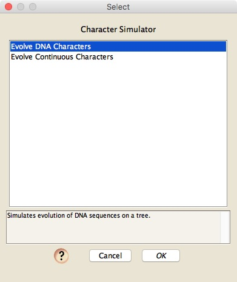
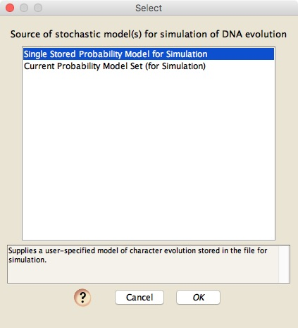
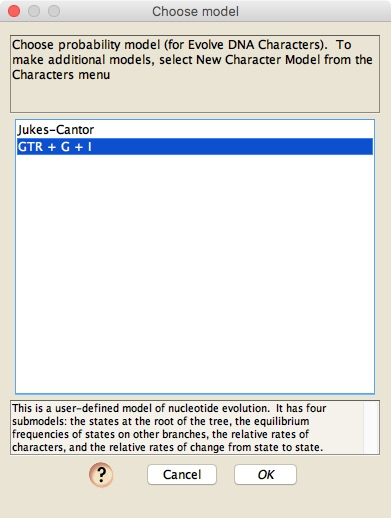
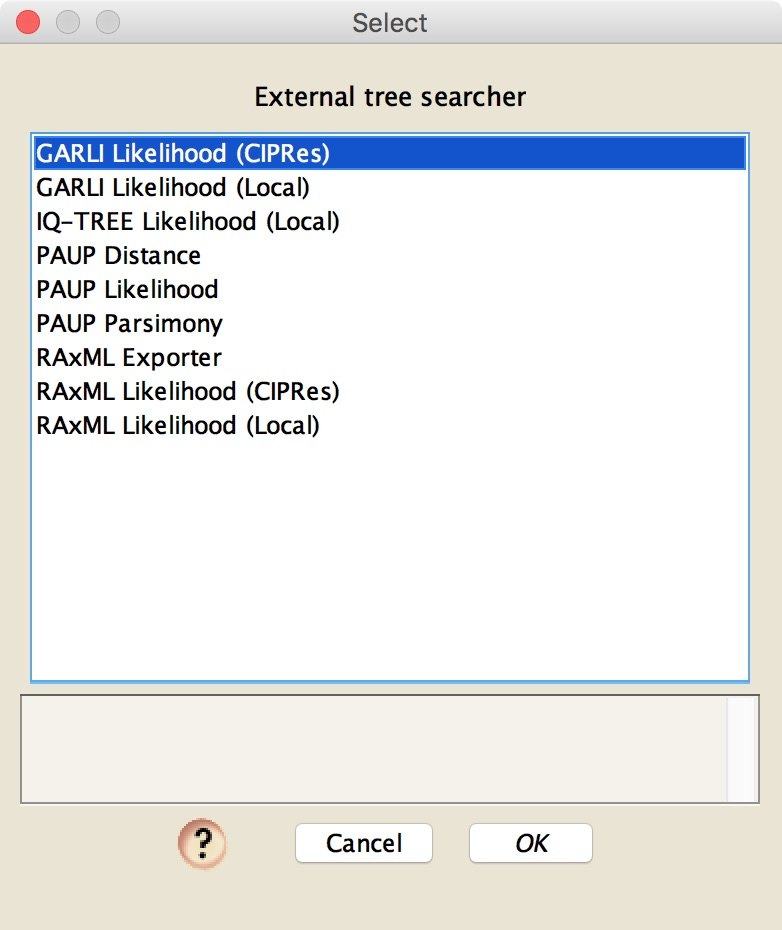
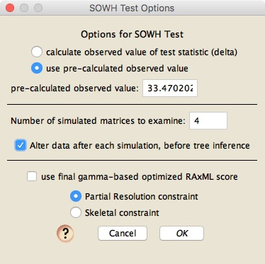
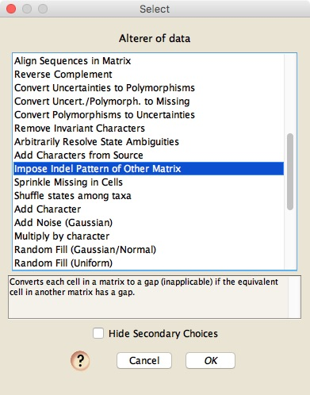
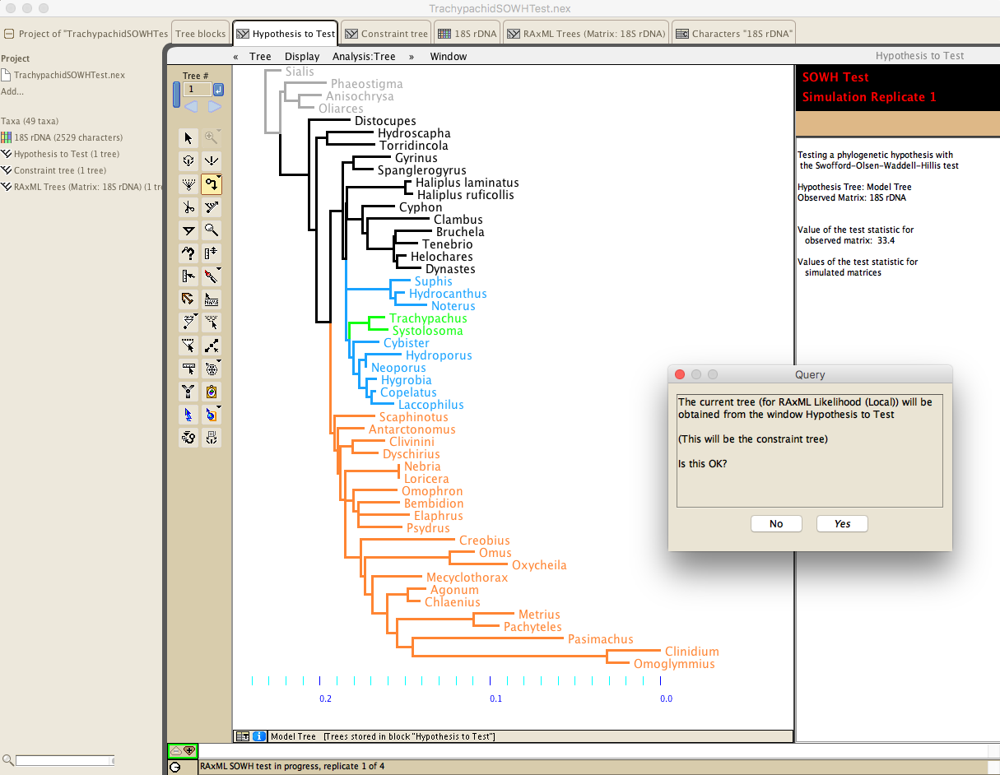
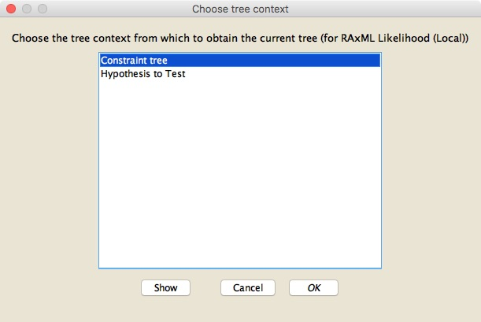
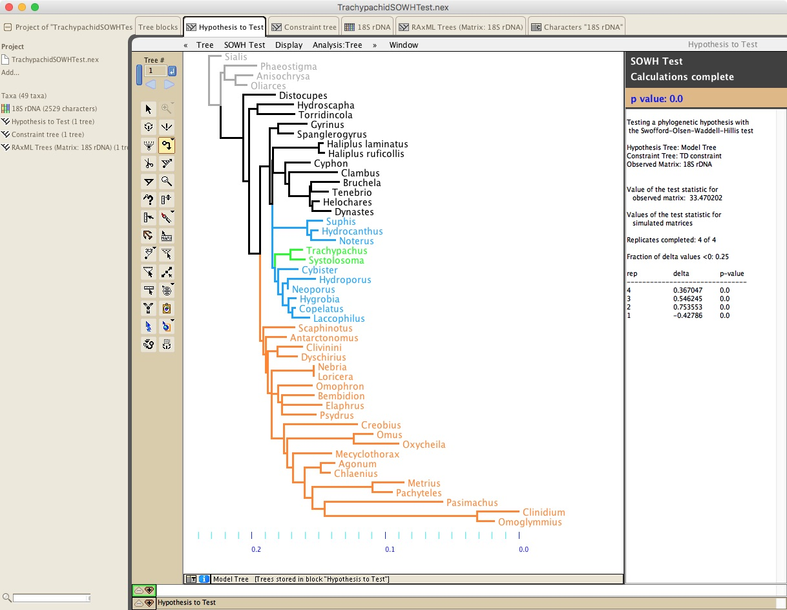
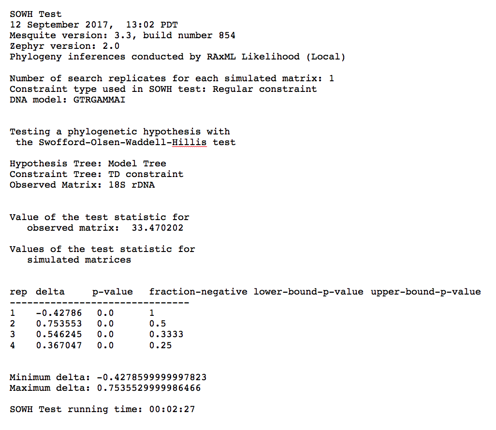

Running the SOWH test
Once you have prepared your Mesquite file, you can run the SOWH test.Make sure the frontmost window contains your model tree, the optimal tree you found from your constrained search.
Then, choose Analysis>SOWH Test... and you will be presented with a series of dialog boxes. In the first dialog box you will choose how to simulate data up the branches of the model tree:

You will generally choose Evolve DNA Characters.
In the second dialog box, you will choose either "Single Stored Probability Model for Simulation" or "Current Probability Model Set (for Simulation)" depending upon whether you want to use the same probability model for all sites (the first choice), or whether you want to assign different probability models to different characters (the second choice, which can be done in the List of Characters window if you choose Columns>Current Probability Models and then use the popup menu at the top of the column that appears to set the models for different characters).

In the example above, we have chosen to use a single stored model, and so Mesquite will then ask which model to use for all sites. In the example file about trachypachids, the model that is stored in the file is called "GTR + G + I", and this is the one we will choose:

Zephyr will then ask for the program that you will use to search for optimal trees. Note that you can choose from various likelihood, parsimony, and distance options. (Even though "RAxML Exporter" is shown in the list below, that choice will not be allowed.)

For speed's sake, in this example we will be choosing RAxML Likelihood.
The next dialog box will be let you choose the core aspects of the SOWH test:

In this dialog box, you can choose to have the observed value of the test statistic calculated, in which case Zephyr will start the test by inferring the optimal constrained tree and the optimal unconstrained tree, and taking the difference between their scores. However, for the trachypachid example, we have already done that, and come up with a value of 33.470202, and so we enter that in the "pre-calculated observed value" box, and choose "use pre-calculated observed value".
In the above dialog box you can select how many simulated matrices to examine (we chose only 4, which is too few - we should do at least 100). We have also chosen to alter the data between the simulation and tree inference phases, so that we can force the simulated matrix to have same pattern of gaps as that in the observed matrix. We will choose a data alterer later. That will be shown below, but before we get to that, there are the remaining items in the bottom of our main SOWH Test Options dialog box.
The remaining items are specific to each tree-inference program, and usually contain some details about the sorts of constraint trees offered by the program. For RAxML, there is an additional option: "use final gamma-based optimized RAxML score". This tells Zephyr to use not the score of the best tree as originally calculated, but as calculated in the secondary pass that RAxML in which it performs a more accurate calculation of the likelihood of the tree (although it unfortunately only does this using a GTR+G model, even if the search was done using a GTR+I+G model).
Once you press OK on the SOWH Test Options dialog box, you will then be asked to choose a name and location for the SOWH report file that will be generated.
Now, back to our choice to alter data between simulating the data and inferring the tree. Although we could chose many options, the one we decided to do is duplicate the pattern of gaps, such that ever cell in the observed matrix that has a gap will also have a gap in the simulated matrix, and so we choose the data alterer "Impose Indel Pattern of Other Matrix":

Zephyr will now present you with the standard dialog boxes for GARLI, RAxML, or PAUP, and allow you to choose the details of the search strategy for finding the optimal tree. Once you have made those choices, it will then ask you about the tree to be used as the constraint tree:
In this case, the tree shown in the window is not the tree to be used as a constraint tree (as that is the model tree, not the constraint tree). In general, you will answer No to this alert so that you can choose the correct tree window containing the constraint tree. For the trachypachid example, that tree window is labelled as "Constraint tree", and so we would choose that:

Once you make that choice, the SOWH test will begin. Mesquite will simulate however many matrices you requested, and for each ask the external program to find the optimal constrained tree, and the optimal unconstrained tree, and take the difference between their scores. This is the test statistic, delta. Zephyr will compare the values of that test statistic across simulated matrices to the observed value, and see what fraction of the simulated delta values are greater than or equal to the observed value of delta, and this will be an estimate of the p-value. It will report the p-value as the test proceeds in a window on the right. Once it has done the replicates you requested, it will ask you if you want to do any more. Once you have decided you have done enough (again, the 4 done in the example is not enough!), then the final results will be displayed to the right of the model tree:

In addition, the SOWH test report will contain all of the details of the analysis. Here is the small test report from the trachypachid example:
